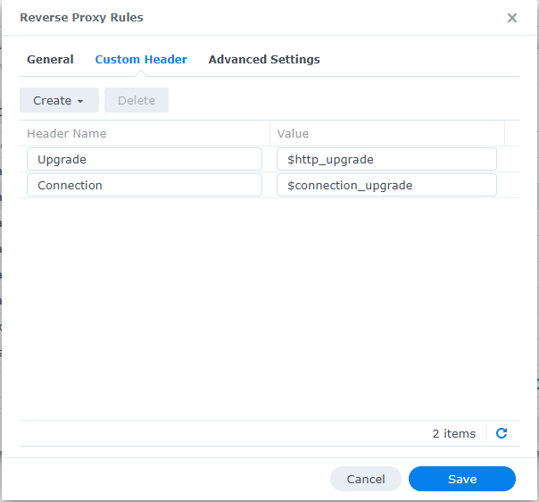
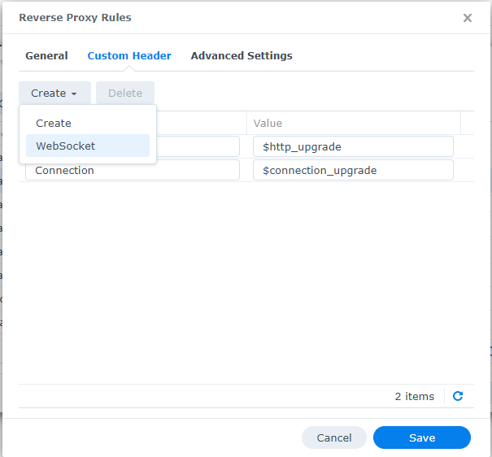

Unsupported Proxies¶
Note
Using Proxies/reverse proxies with Tactical RMM is not a supported configuration, the information below is provided here for your reference.
Although these aren't officially supported configurations, we generally will help point you in the right direction. Please use the Discord #unsupported channel to discuss issues related to these complex installations
General Notes on Proxies and Tactical RMM¶
Port 443¶
Make sure websockets option is enabled.
All 3 URL's will need to be configured: rmm, api, mesh
For mesh see the Section 10. TLS Offloading of the MeshCentral 2 User Guide
Port 4222¶
Is NATS (https://nats.io). You'll need a TCP forwarder as NATS only talks TCP not HTTP.
Traefikv2¶
Offsite Resource: https://gitlab.com/NiceGuyIT/tactical-goodies/-/tree/main/traefik
This section will assume that by default Traefik will reverse proxy everything on port 443.
Here is a basic Traefik config with docker-composer note the file.directory and file.watch are important.
version: "3.7"
services:
traefik:
container_name: traefik24
image: traefik:v2.4
restart: unless-stopped
command:
- --entryPoints.http.address=:80
- --entryPoints.https.address=:443
- --providers.docker=true
- --providers.docker.endpoint=unix:///var/run/docker.sock
- --providers.docker.defaultrule=HostHeader(`{{ index .Labels "com.docker.compose.service" }}.$DOMAINNAME`)
## This is important, to load the config for RMM and Mesh
- --providers.file.directory=rules # Load dynamic configuration from one or more .toml or .yml files in a directory.
- --providers.file.watch=true # Only works on top level files in the rules folder
####
- --certificatesresolvers.dns-cloudflare.acme.dnschallenge=true
- --certificatesResolvers.dns-cloudflare.acme.email=$CLOUDFLARE_EMAIL
- --certificatesResolvers.dns-cloudflare.acme.storage=/acme.json
- --certificatesResolvers.dns-cloudflare.acme.dnsChallenge.provider=cloudflare
- --certificatesResolvers.dns-cloudflare.acme.dnsChallenge.resolvers=1.1.1.1:53,1.0.0.1:53
ports:
- target: 80
published: 80
protocol: tcp
mode: host
- target: 443
published: 443
protocol: tcp
mode: host
volumes:
##The rules that we will load##
- $USERDIR/docker/traefik2/rules:/rules
##
- /var/run/docker.sock:/var/run/docker.sock:ro
- $USERDIR/docker/traefik2/acme/acme.json:/acme.json
- $USERDIR/docker/traefik2/traefik.log:/traefik.log
environment:
- CF_API_EMAIL=$CLOUDFLARE_EMAIL
- CF_API_KEY=$CLOUDFLARE_API_KEY
labels:
- "traefik.enable=true"
# HTTP-to-HTTPS Redirect
- "traefik.http.routers.http-catchall.entrypoints=http"
- "traefik.http.routers.http-catchall.rule=HostRegexp(`{host:.+}`)"
- "traefik.http.routers.http-catchall.middlewares=redirect-to-https"
- "traefik.http.middlewares.redirect-to-https.redirectscheme.scheme=https"
# HTTP Routers
- "traefik.http.routers.traefik-rtr.entrypoints=https"
- "traefik.http.routers.traefik-rtr.rule=HostHeader(`traefik.$DOMAINNAME`)"
- "traefik.http.routers.traefik-rtr.tls=true"
- "traefik.http.routers.traefik-rtr.tls.domains[0].main=$DOMAINNAME"
- "traefik.http.routers.traefik-rtr.tls.domains[0].sans=*.$DOMAINNAME"
Before proceeding, we need to change the port 443 to 4430 and 80 to 800 because the port 443 and 80 are already used by Traefik.
Here is a snippet of the only thing you should modify into docker-compose file of the installation.
# container for tactical reverse proxy
tactical-nginx:
container_name: trmm-nginx
image: ${IMAGE_REPO}tactical-nginx:${VERSION}
restart: always
environment:
APP_HOST: ${APP_HOST}
API_HOST: ${API_HOST}
MESH_HOST: ${MESH_HOST}
CERT_PUB_KEY: ${CERT_PUB_KEY}
CERT_PRIV_KEY: ${CERT_PRIV_KEY}
networks:
proxy:
ipv4_address: 172.20.0.20
ports:
- "800:80" ## port 800 instead of 80
- "4430:443" ## port 4430 instead of 443
Copy the acme.json create by traefik into the root of your rmm directory (In my case its $USERDIR/docker/rmm) which you should have already define. After that we can run this docker to extract the certificates for us.
version: "3.7"
services:
##Copy the acme.json of Traefik2 at volumes: (userdir/docker/rmm in this case)
traefik-certs-dumper:
image: ldez/traefik-certs-dumper:v2.7.4
entrypoint: sh -c '
apk add jq
; while ! [ -e /data/acme.json ]
|| ! [ `jq ".[] | .Certificates | length" /data/acme.json` != 0 ]; do
sleep 1
; done
&& traefik-certs-dumper file --version v2 --watch
--source /data/acme.json --dest data/certs'
volumes:
- $USERDIR/docker/rmm:/data
echo "CERT_PUB_KEY=$(sudo base64 -w 0 $USERDIR/docker/rmm/certs/certs/**yourdomaine.com.crt**)" >> .env
echo "CERT_PRIV_KEY=$(sudo base64 -w 0 $USERDIR/docker/rmm/certs/private/**yourdomaine.com.key**)" >> .env
Next we can create 3 rules to tell traefik to correctly route the https and agent For that we will create 2 rules into traefik directory as per it configuration. folder/traefik/rules
create
nano app-mesh.toml
[http.routers]
[http.routers.mesh-rtr]
entryPoints = ["https"]
rule = "Host(`mesh.**yourdomain.com**`)"
service = "mesh-svc"
##middleware with 2fa
[http.services]
[http.services.mesh-svc]
[http.services.mesh-svc.loadBalancer]
passHostHeader = true
[[http.services.mesh-svc.loadBalancer.servers]]
url = "https://**xxx.xxx.xxx.xxx**:4430" # or whatever your external host's IP is
create
nano app-meshagent.toml
[http.routers]
[http.routers.mesh-rtr1]
entryPoints = ["https"]
rule = """Host(`mesh.**yourdomain.com**`) &&
PathPrefix( `/agent.ashx`, `/meshrelay.ashx`, ) &&
Headers(`X-Forwarded-Proto`, `wss`) """
##Don't add middle where, the agent wont work.
[http.services]
[http.services.mesh-svc1]
[http.services.mesh-svc.loadBalancer]
passHostHeader = true
[[http.services.mesh-svc1.loadBalancer.servers]]
url = "https://**xxx.xxx.xxx.xxx**:4430" # or whatever your external host's IP is
nano app-rmm.toml
[http.routers]
[http.routers.rmm-rtr]
entryPoints = ["https"]
rule = "Host(`rmm.**yourdomain.com**`)"
service = "rmm-svc"
##middleware with 2fa
[http.services]
[http.services.rmm-svc]
[http.services.rmm-svc.loadBalancer]
passHostHeader = true
[[http.services.rmm-svc.loadBalancer.servers]]
url = "https://xxx.xxx.xxx.xxx:4430" # or whatever your external host's IP:port is
That it, you can now restart Tactical rmm and mesh.yourdomain.com should work, same for the agent. Please note that if you have a middleware with 2FA you can still use it with the inside mesh.toml but do not add it with the agent.
HAProxy¶
Check/Change the mesh central config.json, some of the values may be set already, CertUrl must be changed to point to the HAProxy server.
Meshcentral Adjustment¶
Credit to @bradhawkins
Edit Meshcentral config
nano /meshcentral/meshcentral-data/config.json
Insert this (modify HAProxyIP to your network)
{
"settings": {
"Port": 4430,
"AliasPort": 443,
"RedirPort": 800,
"TlsOffload": "127.0.0.1",
},
"domains": {
"": {
"CertUrl": "https://HAProxyIP:443/",
}
}
}
Restart meshcentral
service meshcentral restart
HAProxy Config¶
The order of use_backend is important Tactical-Mesh-WebSocket_ipvANY must be before Tactical-Mesh_ipvANY
The values of timeout connect, timeout server, timeout tunnel in Tactical-Mesh-WebSocket have been configured to maintain a stable agent connection, however you may need to adjust these values to suit your environment.
frontend HTTPS-merged
bind 0.0.0.0:443 name 0.0.0.0:443 ssl crt-list /var/etc/haproxy/HTTPS.crt_list #ADJUST THIS TO YOUR OWN SSL CERTIFICATES
mode http
log global
option socket-stats
option dontlognull
option http-server-close
option forwardfor
acl https ssl_fc
http-request set-header X-Forwarded-Proto http if !https
http-request set-header X-Forwarded-Proto https if https
timeout client 30000
acl RMM var(txn.txnhost) -m sub -i rmm.example.com
acl aclcrt_RMM var(txn.txnhost) -m reg -i ^([^\.]*)\.example\.com(:([0-9]){1,5})?$
acl API var(txn.txnhost) -m sub -i api.example.com
acl aclcrt_API var(txn.txnhost) -m reg -i ^([^\.]*)\.example\.com(:([0-9]){1,5})?$
acl is_websocket hdr(Upgrade) -i WebSocket
acl is_mesh var(txn.txnhost) -m beg -i mesh.example.com
acl aclcrt_MESH-WebSocket var(txn.txnhost) -m reg -i ^([^\.]*)\.example\.com(:([0-9]){1,5})?$
acl MESH var(txn.txnhost) -m sub -i mesh.example.com
acl aclcrt_MESH var(txn.txnhost) -m reg -i ^([^\.]*)\.example\.com(:([0-9]){1,5})?$
#PUT OTHER USE_BACKEND IN HERE
use_backend Tactical_ipvANY if RMM aclcrt_RMM
use_backend Tactical_ipvANY if API aclcrt_API
use_backend Tactical-Mesh-WebSocket_ipvANY if is_websocket is_mesh aclcrt_MESH-WebSocket
use_backend Tactical-Mesh_ipvANY if MESH aclcrt_MESH
frontend http-to-https
bind 0.0.0.0:80
mode http
log global
option http-keep-alive
timeout client 30000
http-request redirect scheme https
backend Tactical_ipvANY
mode http
id 100
log global
timeout connect 30000
timeout server 30000
retries 3
option httpchk GET /
server tactical 192.168.10.123:443 id 101 ssl check inter 1000 verify none
backend Tactical-Mesh-WebSocket_ipvANY
mode http
id 113
log global
timeout connect 3000
timeout server 3000
retries 3
timeout tunnel 3600000
http-request add-header X-Forwarded-Host %[req.hdr(Host)]
http-request add-header X-Forwarded-Proto https
server tactical 192.168.10.123:443 id 101 ssl verify none
backend Tactical-Mesh_ipvANY
mode http
id 112
log global
timeout connect 15000
timeout server 15000
retries 3
option httpchk GET /
timeout tunnel 15000
http-request add-header X-Forwarded-Host %[req.hdr(Host)]
http-request add-header X-Forwarded-Proto https
server tactical 192.168.10.123:443 id 101 ssl check inter 1000 verify none
Apache Proxy¶
howto - proxy on apache
TRMM SERVER¶
edit file /etc/nginx/sites-available/rmm.conf add the lines from 'real_ip' module inside server tag:
set_real_ip_from 192.168.0.200; #IP Address of your apache proxy
real_ip_header X-Forwarded-For;
restart nginx
systemctl restart nginx.service
APACHE¶
enable ssl proxy, rewriteEngine. set proxy to preserve host. set upgrade rule to websocket. set proxypass rules redirecting to rmm location
on your apache ssl config example:
<VirtualHost *:443>
ServerName rmm.blablabla.com.br:443
ServerAlias mesh.blablabla.com.br:443 api.blablabla.com.br:443
SSLEngine on
SSLCertificateFile "C:/Apache24/conf/ssl-rmm.blablabla.com.br/_.blablabla.com.br-chain.pem"
SSLCertificateKeyFile "C:/Apache24/conf/ssl-rmm.blablabla.com.br/_.blablabla.com.br-key.pem"
SSLProxyEngine on
RewriteEngine On
ProxyPreserveHost On
# When Upgrade:websocket header is present, redirect to ws
# Using NC flag (case-insensitive) as some browsers will pass Websocket
RewriteCond %{HTTP:Upgrade} =websocket [NC]
RewriteRule ^/(.*) wss://192.168.0.212/$1 [P,L]
ProxyPass "/" "https://192.168.0..212/" retry=3
ProxyPassReverse "/" "https://192.168.0.212/" retry=3
BrowserMatch "MSIE [2-5]" \
nokeepalive ssl-unclean-shutdown \
downgrade-1.0 force-response-1.0
Updating certificate:¶
In my case, auto DNS Challenge from apache, so every time we get new cert files, it must be copied inside rmm too. just overwrite default location: /etc/letsencrypt/archive/blablablabla or change certs location on nginx conf to whatever you want.
nginx Proxy¶
Having mesh connection issues?
See https://info.meshcentral.com/downloads/MeshCentral2/MeshCentral2UserGuide.pdf page 30.
Nginx Proxy Manager¶
In NPM, declare the hosts with the parameters:
api.{domain}
https | TRMM server IP | 433
ON: Cache Assets | Block Common Exploits | Websockets Support
mesh.{domain}
https | TRMM server IP | 443
ON: Cache Assets | Block Common Exploits | Websockets Support
rmm.{domain}
https | TRMM server IP | 443
ON: Cache Assets | Block Common Exploits | Websockets Support
proxy.{domain}
http | NPM server IP | 81 (NPM web UI port)
Then connect in SSH to your TRMM server to modify the nginx config of Mesh:
nano meshcentral/meshcentral-data/config.json
Then modify in this file the TlsOffload field to put the local IP address of your NPM and the port that goes with it, then also modify the "CertUrl" field to put the public domain name of your NPM.
{
"settings": {
"Cert": "${meshdomain}",
"MongoDb": "mongodb://127.0.0.1:27017",
"MongoDbName": "meshcentral",
"WANonly": true,
"Minify": 1,
"Port": 4430,
"AliasPort": 443,
"RedirPort": 800,
"AllowLoginToken": true,
"AllowFraming": true,
"_AgentPing": 60,
"AgentPong": 300,
"AllowHighQualityDesktop": true,
"TlsOffload": "{NPM LAN IP}:81",
"agentCoreDump": false,
"Compression": true,
"WsCompression": true,
"AgentWsCompression": true,
"MaxInvalidLogin": { "time": 5, "count": 5, "coolofftime": 30 }
},
"domains": {
"": {
"Title": "Tactical RMM",
"Title2": "Tactical RMM",
"NewAccounts": false,
"CertUrl": "https://proxy.{domain}:443/",
"GeoLocation": true,
"CookieIpCheck": false,
"mstsc": true
}
}
}
Then restart your mesh
systemctl restart meshcentral.service
At which point agents should be working. Use the "Recover Connection" button if necessary
Synology NAS reverse proxy portal¶
Follow HAProxy
And set the "CertUrl" to point to the IP address of my NAS that was running the reserve proxy and had the certificates installed.
In Synology NAS reverse proxy portal and added websockets to the rmm domains, especially the mesh domain under custom headers, by just clicking the create button and choosing WebSocket:

